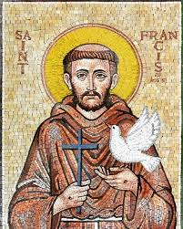
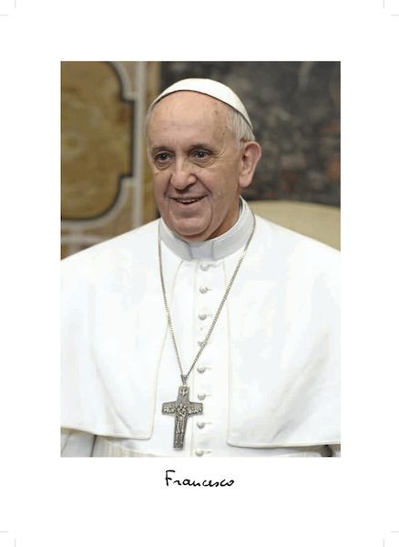
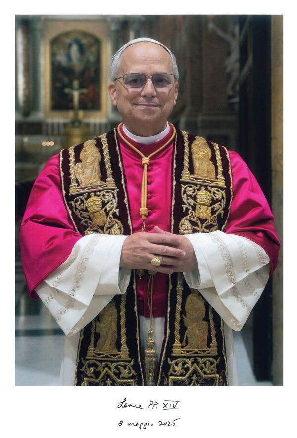

Reflexión · Oración · Esperanza
Palabra del Día
Una luz diaria para tu camino — versículos breves que consuelan, fortalecen y guían el corazón.
Pulsa “Recibir palabra” y deja que el Señor te hable hoy.
Comunión de los santos
Santos de la Iglesia Católica
Vidas entregadas a Dios que iluminan, con su ejemplo, el camino de cada creyente.
San Pío
de Pietrelcina
San Pío de Pietrelcina
«Reza, espera y no te preocupes; la ansiedad no sirve para nada.»
VolverSan Carlos
Borromeo
San Carlos Borromeo
«El alma que ama de verdad a Dios no puede dejar de obrar.»
Volver
San Francisco
de Asís
San Francisco de Asís
«Empieza haciendo lo necesario, después lo posible, y de repente harás lo imposible.»
VolverVoces de fe
Muro de Testimonios
Historias reales de fe, conversión y esperanza compartidas por la comunidad. Tu palabra puede ser luz para otro corazón.
Aún no hay testimonios. Sé el primero en compartir tu luz.
Sucesores de Pedro
Los últimos cinco Papas
Pastores que han guiado a la Iglesia en tiempos recientes, dejando huella de fe, sabiduría y servicio.
Juan Pablo I
1978
Juan Pablo I
«Dios es Padre; más aún, es Madre.»
VolverSan Juan Pablo II
1978 – 2005
San Juan Pablo II
«¡No tengáis miedo! ¡Abrid de par en par las puertas a Cristo!»
VolverBenedicto XVI
2005 – 2013
Benedicto XVI
«El mundo nos ofrece comodidad, pero no fuimos hechos para la comodidad, sino para la grandeza.»
Volver
Francisco
2013 – 2025
Francisco
«Un poco de misericordia hace al mundo menos frío y más justo.»
Volver
León XIV
Pontífice
León XIV
«La paz esté con todos vosotros.»
VolverHebreos 11,1
La Fe
“ La fe es la confianza plena en Dios, en sus promesas y en su amor incondicional. ”
Escríbenos
Contacto
Si deseas colaborar, sugerir contenido o enviar un testimonio, escribe a:
tombc07@gmail.com